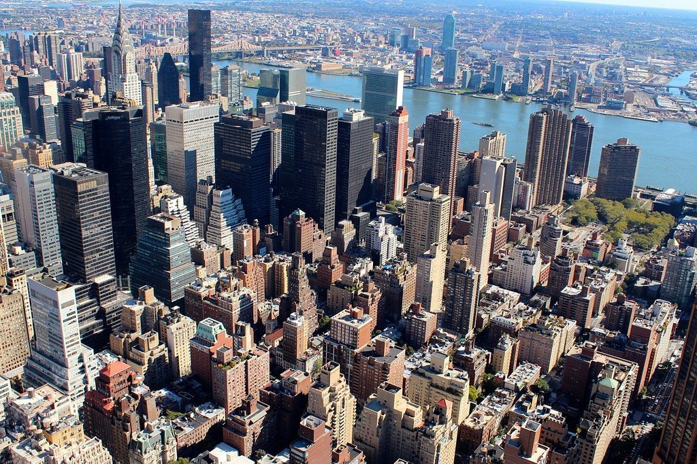

 Нью-Йо́рк — крупнейший город США, входящий в одну из крупнейших агломераций мира. Население города составляет 8 467 513 человек. Нью-Йорк расположен на берегу Атлантического океана в юго-восточной части штата Нью-Йорк. Город был основан в начале XVII века голландскими колонистами и до 1664 года назывался Новый Амстердам. Нью-Йорк включает пять административных округов (районов): Бронкс, Бруклин, Куинс, Манхэттен и Статен-Айленд. Основные достопримечательности расположены в районе Манхэттен. Среди них: исторические небоскрёбы (Эмпайр-стейт-билдинг, Крайслер-билдинг), Метрополитен-опера, Музей Соломона Гуггенхейма (живопись) и т.д.. Нью-Йорк — важный мировой финансовый, политический, экономический и культурный центр.